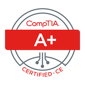

Greetings! A qualified DevOps Cloud Engineer and U.S. Air Force veteran. 10+ years experience managing network infrastructure. Passionate about designing scalable CI/CD solutions tailored to operational goals. Skilled at infrastructure configuration management and optimizing deployment strategies.
You are visitor: Loading...
PROJECTS
The website you're looking at, is the end result of the Cloud Resume Challenge, I built and hosted in Amazon AWS.
- Designed CI/CD pipeline to automate building, testing, and deployments to AWS. Streamlined development, wrote GitHub Actions CI/CD workflow. Used Git local version control. Automated continuous integration and continuous deployments, improving release frequency and reducing manual configuration.
- Deployed Scalable Infrastructure utilizing Infrastructure as Code (IaC). Automated infrastructure provisioning and configuration, utilizing AWS CloudFormation. Ensuring efficient, repeatable, and version-controlled deployments. Also improving infrastructure management.
- Optimized and Secured Content Delivery. Leveraged AWS CloudFront CDN delivering high-bandwidth content, reducing latency, enhancing user experience, and securing data in transit through HTTPS.
- Implemented Event Driven Architecture Solution. Implemented serverless, event-driven back end scaling automatically and reducing costs, running only on demand. Configured Python AWS Lamba function API to securely interact with AWS DynamoDB, updating and retrieving visitor count.
- Secured infrastructure. Configured WAF Web ACL rules. Restricted access to resources through IAM.
CERTIFICATIONS

TECHNICAL SKILLS
Cloud: AWS, Lamba, EC2, S3, RDS, VPC, ALB, CloudWatch, Azure, Azure DevOps, Azure App Service, Azure Functions, IaaS
Programming: SDLC, Python, Shell Scripting
Version Control/Source Code Management: Git, GitHub
Continuous Integration/Continuous Deployment (CI/CD): Jenkins, GitHub Actions, GitLab
Infrastructure As Code (IaC): Terraform, AWS CloudFormation, Azure Bicep/ARM Templates
Contanerization & Orchestration: Docker, Kubernetes, Amazon EKS, Azure AKS
Security: IAM, RBAC, AWS GaurdDuty, Cloud Governance
Networking: DNS, Firewalls, Subnets, VPNs, TCP/IP
DevOps, Linux Administration, SQL
EXPERIENCE
- Capital Investments Realty | Director IT Operations
- SOLTECH | Systems Admin
- Cbeyond | IT Support Technician
- United States Air Force | Voice Network Technician
2017 - Present (Atlanta, GA)
Driving digital transformation and modernization strategies. Established data driven portfolio management strategies.
Empowered organization with real time predictive analytics tools for market forecasting, tracking property trends and historical data, leading to a 40% increase in property sales.
Negotiated, cost optimized, and managed strategic partner relationships, securing favorable terms for software licenses, IT services, and hardware. Reduced annual IT costs by 25%.
2013 - 2017 (Atlanta, GA)
Administered Windows Server (2016, 2019, 2022), overseeing installation, configuration, and maintenance, including Active Directory, Group Policy, DNS, and DHCP services, to ensure stable and secure operation. Administered the configuration and troubleshooting of Windows Server environments in both physical and virtual environments (Hyper-V, VMware).
Integrated advanced security configurations using Active Directory permissions, firewalls, access control lists (ACLs), and intrusion detection systems, ensuring compliance and secure access.
Automated routine administrative tasks and system updates with PowerShell scripting, enhancing efficiency and reducing manual workloads. Supported large-scale virtualization and storage infrastructures, including SAN and NAS systems, for optimized resource allocation and server performance in virtualized environments.
2010 - 2013 (Atlanta, GA)
Resolved 90% of advanced technical issues on first contact by diagnosing and troubleshooting Windows environments, reducing escalation rates and improving overall team efficiency. Diagnosed and resolved hardware, software, and connectivity issues within SLAs. Configured DNS & DHCP network settings.
Performed network diagnostics, including troubleshooting Wi-Fi, Ethernet, switches, routers, and access points. Provided tech support services and IT solutions for over 600+ end users.
Managed user accounts and permissions in Active Directory, handling password resets, Group Policy updates, and access requests.
2006-2010
Installed, configured, managed, monitored, and performed troubleshooting on various network and telecommunications equipment on U.S. Air Force military installations.
Provided mission critical voice networking services to include system modernization upgrades and maintenance on switch mainframe systems, copper and fiber-optic wiring, terminal blocks, key and intercom systems, data transmission media, modems, and associated telecommunications/networking hardware supporting mission critical communications.
Performed end user IT support functions. Configured, restored and upgraded voice network systems components, information systems hardware, telephone switching equipment, PBX systems, telephone key equipment, telephone wiring, call routing translations for lines, trunks, and special service circuits.
Trained and instructed Airmen on voice network systems installation procedures. Planned wiring and programming of telephone system equipment. Tested and verified equipment to meet military operational requirements. Inspected and evaluated voice network systems for operation and proper installation ensuring compliance with military specifications. Analyzed and optimized mainframe traffic loads.
Sustained voice and data network infrastructure, through effective troubleshooting, repair, diagnostics and system maintenance ensuring 99.99% uptime.
EDUCATION
- Community College Of the Air Force
Associate Degree - Applied Science, Electrical Systems Technology, 2010


© 2024 Ahmed Harris.